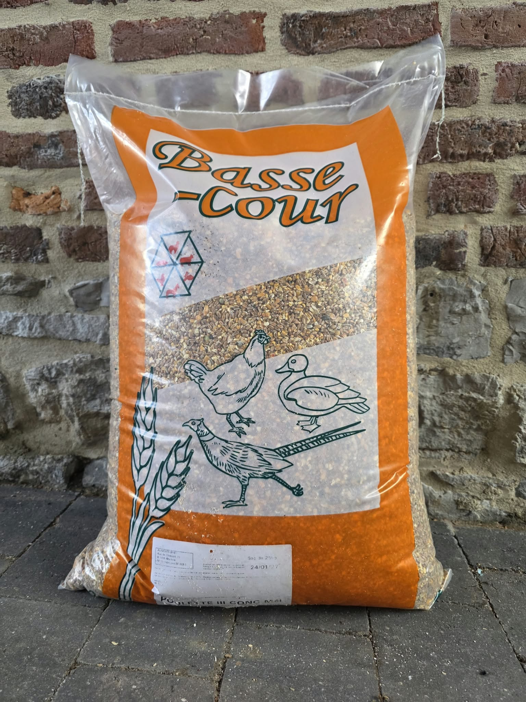
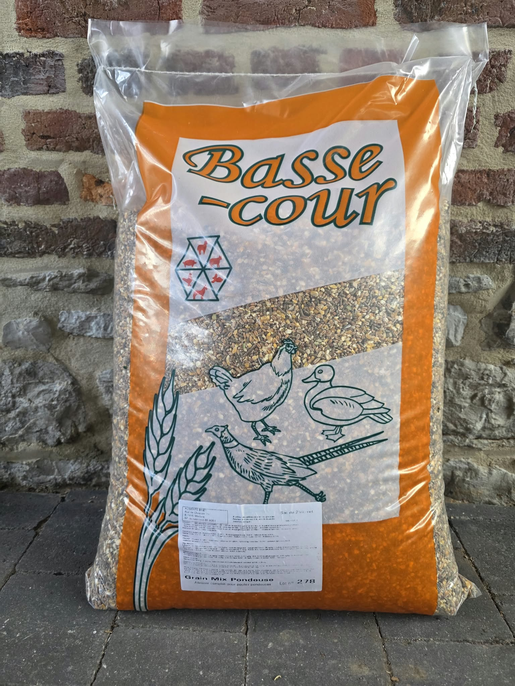
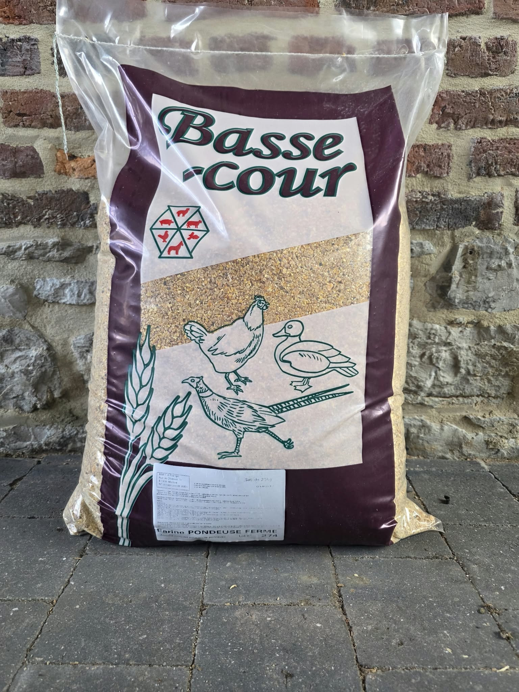
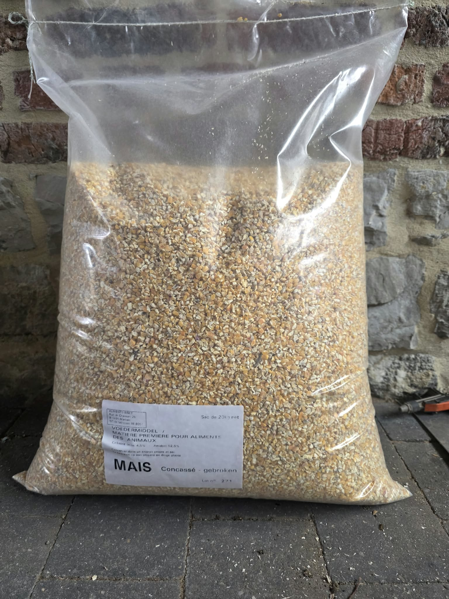
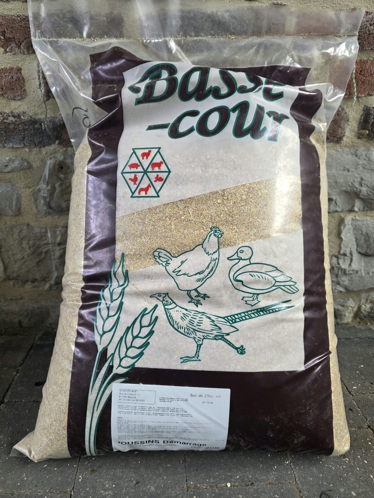
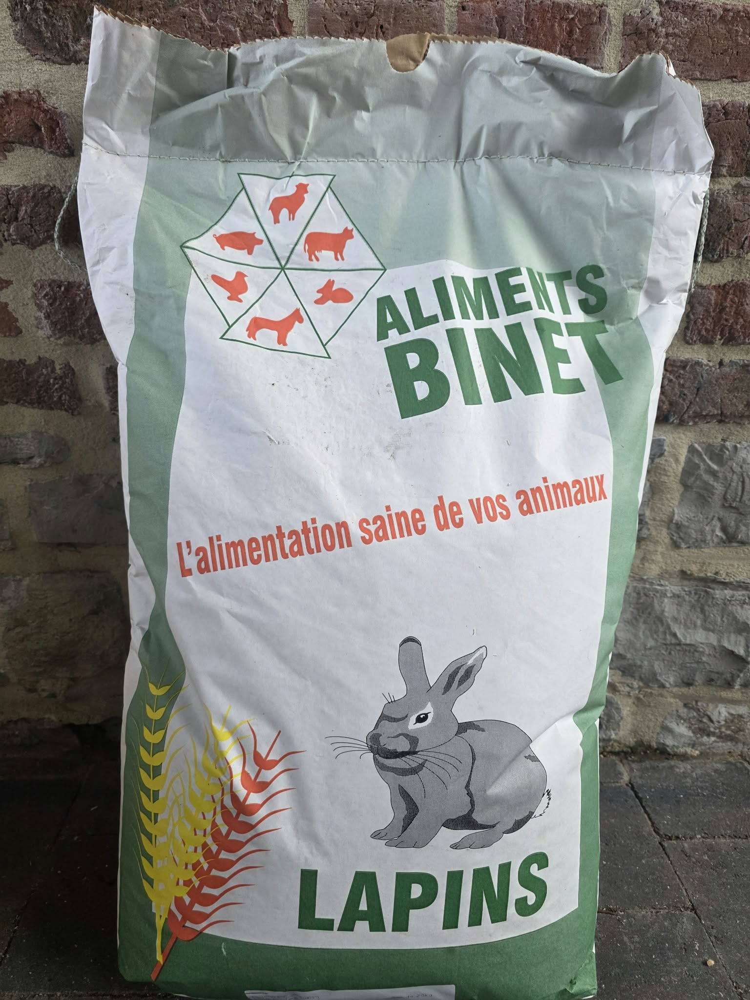
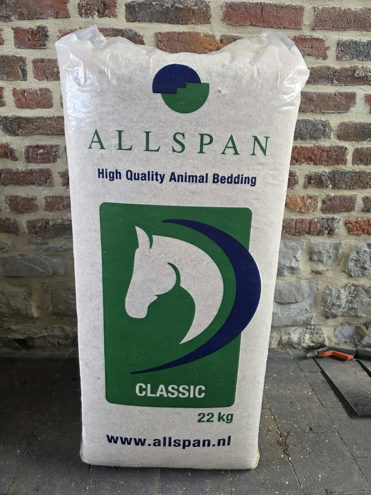
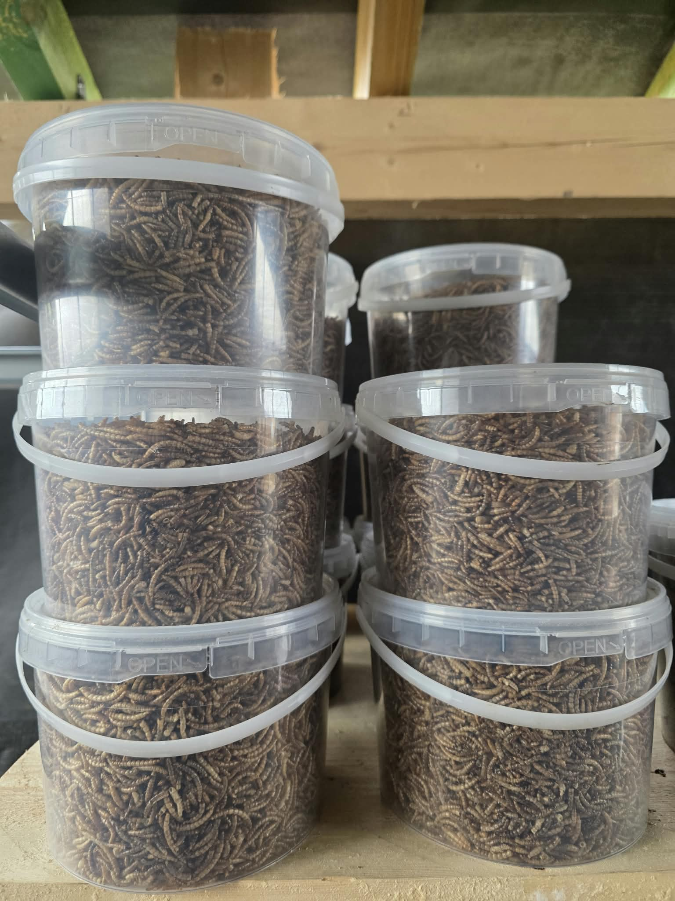

Mélange concassé
Alimentation de base pour poules.

Alimentation de base pour poules.

Alimentation avec granulés de ponte.

Alimentation riche en protéines et beaucoup mieux assimilée par l'organisme, sans aucun gaspillage.


Farine premier âge.
Alimentation pour poulets d'engraissement.

Alimentation, mélange pour lapins.
Alimentation pour moutons, chèvres et cochons de compagnie.

À privilégier à la paille pour lutter contre les parasites.

Complément alimentaire très riche en protéines et en graisses.